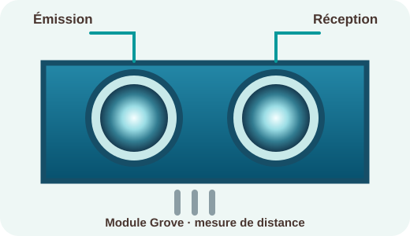
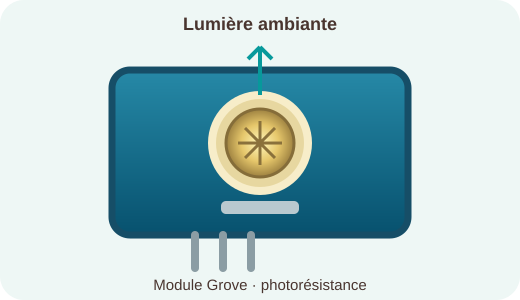
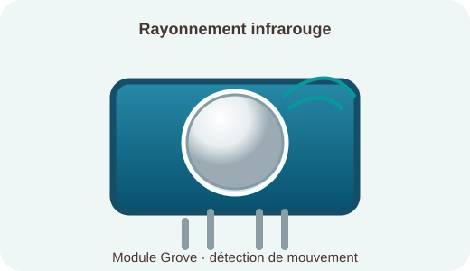

Fiche interactiveCapteur à ultrasons
Mesurer une distance sans contact et détecter un obstacle.
Ouvrir la fiche interactive →Découvrir comment un système acquiert des informations sur son environnement.

Fiche interactiveMesurer une distance sans contact et détecter un obstacle.
Ouvrir la fiche interactive →
Fiche interactiveMesurer le niveau de lumière pour adapter le fonctionnement d'un système.
Ouvrir la fiche interactive →
Fiche interactiveDétecter un mouvement grâce aux variations du rayonnement infrarouge.
Ouvrir la fiche interactive →Les prochaines fiches sont préparées pour les modules retenus dans le projet de programmation.
Une entrée numérique pour transmettre une commande à l'utilisateur.
Découvrir la fiche →Une entrée analogique pour mesurer une grandeur physique et la convertir en température.
Découvrir la fiche →Un capteur est un composant qui détecte une grandeur physique ou un événement dans son environnement et la transforme en une information exploitable par un système technique.
DistanceLuminositéTempératureHumiditéMouvementPression